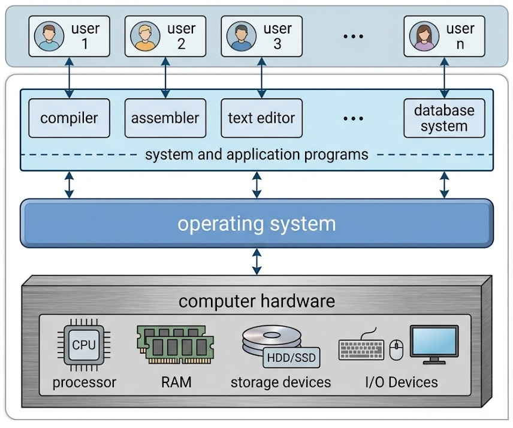
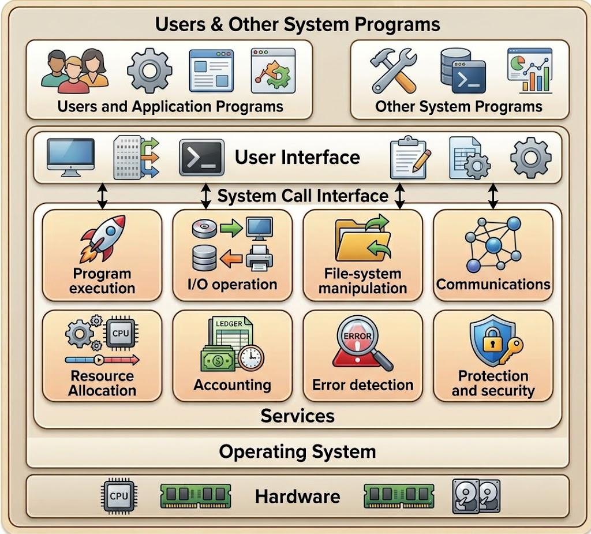
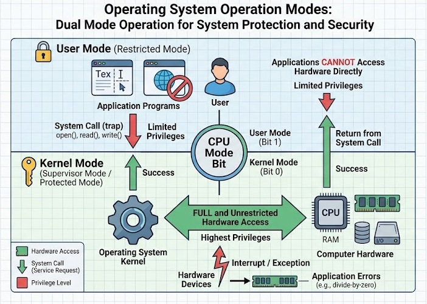
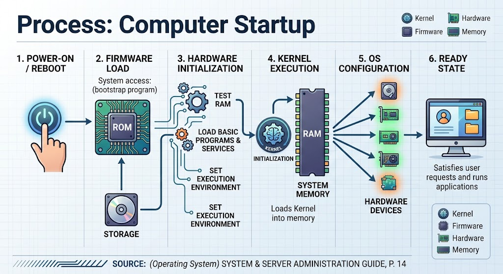

1Introduction to Computer Systems and Operating Systems
1Computer System Structure (Hardware, OS, Apps, Users)
Computer System
A computer system is a set of hardware devices and software that work together to execute and manage various operations and tasks within computers. A computer system consists of a variety of components that cooperate to provide an execution environment for applications and perform computing operations.
A computer system can be divided into four main components:
Hardware: The physical components of the computer, such as the Processor, Memory, Storage Devices, I/O Devices, and so on.
Operating System: A collection of software, each designed for a specific function, aimed at controlling and coordinating the use of hardware among various applications and users.
Application Programs: Software that defines the ways in which system resources are used to solve computing problems for users (e.g., Word Processors, Database Systems, Web Browsers, Compilers).
Users: The entities using the computer, which may be people, machines, etc.


2Introduction to Operating Systems
2.1What is an OS? (Intermediary layer)
An operating system is necessary in every computer to run programs and manage resources. It organizes and coordinates the operation of various hardware components in the computer, such as the processor, memory, storage units, and input/output units.
Operating System (OS)
An Operating System (OS) acts as an intermediary layer between computer hardware and the software applications executed by users. Its main objective is to provide a safe, efficient, and user-friendly environment where applications can run without needing direct control over low-level hardware routines.
| Subsystem | Primary Function | Core Abstractions / Concepts |
|---|---|---|
| Process Management | Allocates CPU time to competing threads and handles process state transitions. | PCB (Process Control Block), Context Switching, Preemptive Scheduling |
| Memory Management | Maps virtual addresses to physical RAM and manages secondary memory paging. | Virtual Memory, Page Tables, MMU (Memory Management Unit), Swapping |
| Storage & File Systems | Provides structured file abstraction and manages non-volatile disk blocks. | Inodes, VFS (Virtual File System), Allocation Tables (FAT, NTFS, ext4) |
| I/O & Device Drivers | Buffers, caches, and routes requests between hardware devices and applications. | Interrupt Handlers, DMA (Direct Memory Access), Character/Block Devices |
| Security & Access Control | Enforces user privileges, resource isolation, and access permission rules. | Access Control Lists (ACLs), User vs. Kernel Mode (Ring 0 / Ring 3) |
2.2OS Services (User-facing vs. System-facing)
To achieve this, the OS architecture is structured around two key categories of services:
User-Facing Services: Capabilities designed to help users and application programs carry out tasks effectively (such as process execution, input/output management, and file storage).
System-Facing (Efficiency) Services: Background functions designed to ensure the underlying system operates smoothly, fairly, and securely (such as allocating resources among competing processes, error handling, and security enforcement).


1. User Interface (UI) Layer
The top layer of the Operating System allows users and application programs to interact with the system through three main interfaces:
Graphical User Interface (GUI): A visual interface using windows, icons, and menus for interactive input.
Command Line Interface (CLI): A text-based interface where users type direct commands for process or file execution.
Batch Interface: An automated execution mechanism where series of commands/programs are queued and executed without direct user intervention.
2. User-Facing Services
These services directly assist users and application programs in executing tasks:
Program Execution: Loads programs into memory, handles execution, manages processes, and terminates execution normally or handles abnormal crashes.
I/O Operations: Provides a standardized interface for running programs to communicate with input/output hardware (keyboards, disks, displays, printers) without managing hardware-level device drivers directly.
File-System Manipulation: Handles creating, reading, writing, searching, deleting, and updating files and directories, along with setting access permissions.
Communications: Enables processes to exchange information either on the local machine (inter-process communication via shared memory or message passing) or across network links.
3. System-Facing (Efficiency & Management) Services
These background services ensure the operating system operates efficiently, fairly, and securely among multiple users or processes:
Resource Allocation: Manages and allocates system hardware resources—such as CPU execution cycles, main memory (RAM), and storage devices—among competing concurrent jobs.
Accounting: Tracks and logs resource utilization metrics (CPU usage time, memory overhead, disk usage) for system monitoring, optimization, or billing.
Error Detection: Continuously detects and handles errors occurring in hardware (memory errors, power failures), I/O devices, or software bugs to maintain system stability.
Protection and Security:
Protection: Ensures internal process isolation so concurrent processes cannot corrupt each other's memory space or system resources.
Security: Controls access to system resources via user authentication, credentials, and access control permissions to prevent unauthorized external access.
Key Distinction
The fundamental core program that runs at all times on the computer is the Kernel. Everything else is classified as either a system program or an application program.
2.3System Calls
During program execution, an application may require services provided by the operating system (e.g., accessing hardware, reading/writing files, or managing processes). To access these services, the OS provides System Calls. These system calls are executed and handled within Kernel Mode.

2.3.1How System Calls Work
When a program requests a service like printing, specific underlying functions (system calls) are invoked in the background. Parameters are passed to these functions, allowing the operating system to safely execute the requested operation.
Mode Execution: System calls operate in Kernel Mode to ensure security and prevent user programs from directly manipulating critical hardware or memory.
Execution Frequency: Modern operating systems execute thousands of system calls per second.
Common Linux System Calls:
open,read,write,close,wait,exec,fork,exit.
2.3.2APIs vs. System Calls
Directly writing code with raw system calls can be complex and platform-dependent. Therefore, application developers typically use an Application Programming Interface (API) operating in User Mode (such as POSIX API in C or the Standard C Library).
Behind the scenes, API functions invoke the corresponding system calls via the System Call Interface (SCI).
Example (Printing to Screen):
The user application calls
printf("Greetings");via standard C library in User Mode.The function triggers
write()through the System Call Interface (SCI).The system switches to Kernel Mode to execute the system call and complete the output operation.
The result and return status are passed back across the boundary to User Mode.
2.4Operating System Operations
Operating systems execute a variety of operations across both hardware and software levels to maintain system stability, performance, and security.
Key operations include:
Interrupt Handling (Interrupts): Operating systems use interrupts to manage asynchronous and unexpected events at the hardware level. When an interrupt occurs—such as a hardware request or software error—the OS pauses the current execution flow to handle the event immediately. This mechanism ensures quick responsiveness to critical system events and enables efficient resource scheduling.
Software Error Management: Operating systems detect and gracefully manage errors or exceptions caused by running applications (such as a division-by-zero error). Instead of allowing the system to crash, the OS intercepts the error, provides an appropriate status or error message, and safely terminates or handles the faulty process.
System Service Requests: Applications request specific services from the operating system to perform low-level or restricted tasks. These include file operations (creation/deletion), memory management, network communication, process management, and access to hardware devices like storage drives or printers. The OS processes these requests securely and efficiently.
2.5Operating System Modes (OS Modes)
Operating systems implement dual-mode operation (Dual Mode) to separate and protect critical system tasks from user applications, ensuring system stability, protection, and security.
User Mode: When user applications execute—such as editing a document or running software—the CPU operates in User Mode. In this mode, application execution privileges are restricted and isolated from core system resources and hardware routines. This isolation prevents user programs from inadvertently crashing the system or directly interfering with vital OS processes.
Kernel Mode (Supervisor Mode): When an application requests a service from the operating system (via a system call) or when a hardware interrupt occurs, the CPU switches execution mode from User Mode to Kernel Mode. In Kernel Mode, the operating system has unrestricted, full access to all underlying hardware components, physical memory, and privileged system instructions. This mode handles sensitive operations such as memory management, CPU scheduling, and hardware device communication.

Key Takeaways
The Dual Mode mechanism provides fundamental security and isolation.
Restricted operations are strictly contained in User Mode, while privileged and hardware-level operations are safely executed within Kernel Mode.
3Command Line Interface (CLI)
The Command Line Interface (CLI)—also known as the command interpreter—is an interface that allows users to interact with the operating system and software programs using text-based commands. The CLI works by parsing, analyzing, and executing the commands entered by the user.
In modern general-purpose operating systems (including Linux, Windows, and macOS), the CLI (specifically the shell) is strictly a user-space program and is almost never embedded directly into the operating system kernel. While the kernel provides the underlying system call interface that the shell uses to request privileged operations, the shell itself runs in user mode. This separation ensures system stability; if a shell crashes, the underlying kernel and hardware remain unaffected. The main goal of the CLI is to facilitate the efficient execution of commands, system management, and program control.
Operating systems typically contain multiple command interpreters from which the user can choose. These command interpreters are commonly known as shells.

3.1Distinguishing Terminals and Shells Across Operating Systems
To understand how the CLI works in practice, it is crucial to distinguish between the Terminal Emulator (the graphical window) and the Shell (the program interpreting the text).
Here is how these components manifest across different operating systems:
1. Linux (The Primary Focus for this Lab)
Terminal Emulators (The Window): GNOME Terminal, Konsole, xterm, Alacritty, Terminator.
Shells (The Interpreter):Bash (Bourne Again Shell - the default on most distributions), Zsh (Z Shell), sh (Bourne Shell), and fish (Friendly Interactive Shell).
2. macOS
Terminal Emulators: The native
Terminal.app, iTerm2, Alacritty.Shells:Zsh (the default on modern macOS), Bash (the default on older macOS versions). (Note: macOS is Unix-based, so its shell environment behaves very similarly to Linux).
3. Windows
Terminal Emulators: Windows Terminal (the modern unified app), the legacy Command Prompt window, or the PowerShell window.
Shells:CMD.exe (Command Prompt - legacy MS-DOS syntax), PowerShell (the modern, object-oriented default), and Git Bash (a popular third-party Unix-like shell environment for Windows).
The Execution Pipeline: Regardless of the operating system, the relationship between the user, the terminal, and the kernel follows a structured pipeline:
4Computer Startup and the Linux Boot Process
When a computer starts up or reboots, a bootstrap program is executed. In modern systems, this firmware is stored in non-volatile memory such as Flash memory or UEFI NVRAM (replacing older ROM or EPROM technologies).
The function of this firmware (commonly known as BIOS or UEFI) is to perform a Power-On Self-Test (POST) to initialize and verify hardware components, such as system RAM and storage devices. Once the hardware is ready, the firmware locates and loads a bootloader from the storage drive. In Linux systems, this is typically GRUB2 (GRand Unified Bootloader).
The bootloader’s primary job is to load the Linux Kernel into memory and pass control to it. The kernel then initializes core hardware drivers and mounts the root file system. Finally, the kernel starts the first user-space process, known as the init system (modern Linux distributions predominantly use systemd). This init system configures background services, sets up the environment, and ultimately presents the user with a login prompt or graphical interface, making the computer ready to execute user applications.

